The mark, the lockups, the colours and type, the pieces of the interface and the way Seed speaks. Everything here is taken from the site as it ships.
Version 1.0 · October 2026 · seed-nu-ten.vercel.app
A launchpad for raises on Solana. Buy into an idea at one fixed price, paired with SOL or USDC. If it fills, the whole raise opens a Meteora pool that is locked for good. If it misses, every wallet gets back exactly what it paid.
A raise sells its token at a price set by its target. Fill it and the whole raise opens a Meteora pool, locked for good. Miss it and every wallet is refunded, fee included.
Backers buy at the fixed price until the target or the deadline.
The supply is minted, the pool opens and its liquidity is locked for good.
Nothing is minted; every backer claims back what they paid, fee included.
Twenty-one dots. Twenty shrink as they spiral out from the centre; one, the seed, is the only thing in blue. The mark is the site's one picture: a raise is many small wallets gathering around one idea.
The dots are the text colour of whatever they sit on (ink on charcoal, charcoal on light); the seed is #5B8CFF on dark and #2E63E7 on light. The dots never take another hue. There is no outline, no container and no gradient inside the mark itself.
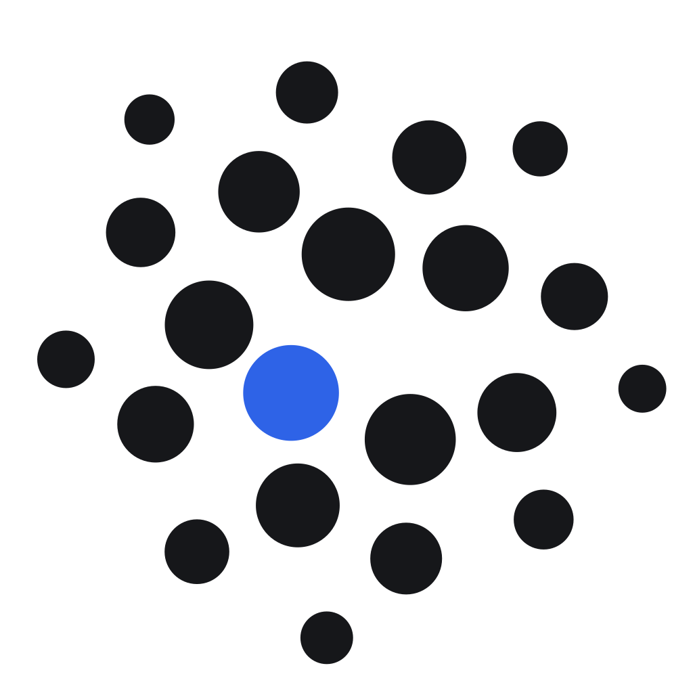
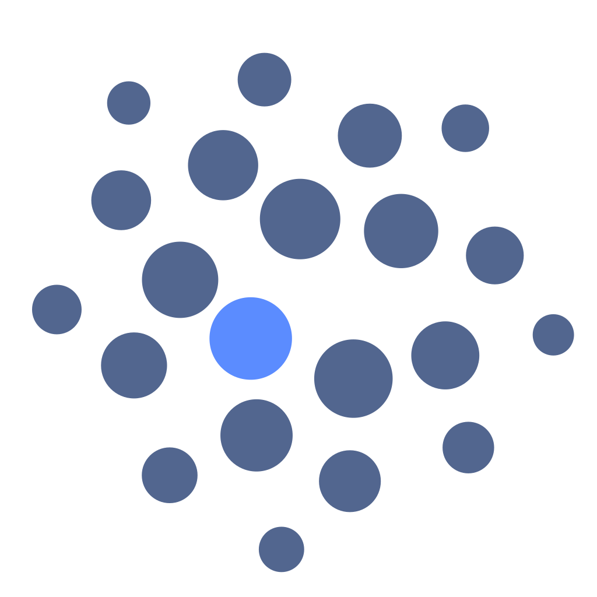
The geometry is fixed. Use the files; never redraw the dots.
The seed is 6.91 units in a 100-unit square. Each further dot is 2.5% smaller than the last (6.74 → 3.46) and sits one step further along the spiral. The centre of mass is a touch left of centre, so the mark is placed by its box, not its visual centre.
Keep a quarter of the mark's width clear on every side. Text, buttons, other marks and the edge of a frame stay outside it. In a lockup the wordmark is the exception: it sits 0.4 em from the box.
16 · 24 · 34 · 48 · 72 px
16px on screen (the favicon), 6mm in print. Below that the smallest dots vanish and the one-colour version with the dots merged reads better. The site uses 32–34px in the app bar and the rail, 232–272px in the hero.
Charcoal first (#16171A), the paper well (#121316) and panels. On light, #F3F4F6 or white. Never a mid grey, never a photograph without a scrim.
One mark, one blue, one orientation.
The mark leads. The others are for the places it does not fit alone: a header, a footer, a one-colour print, a quiet surface.
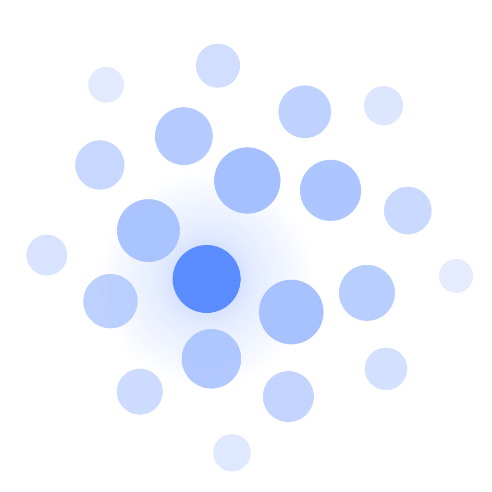
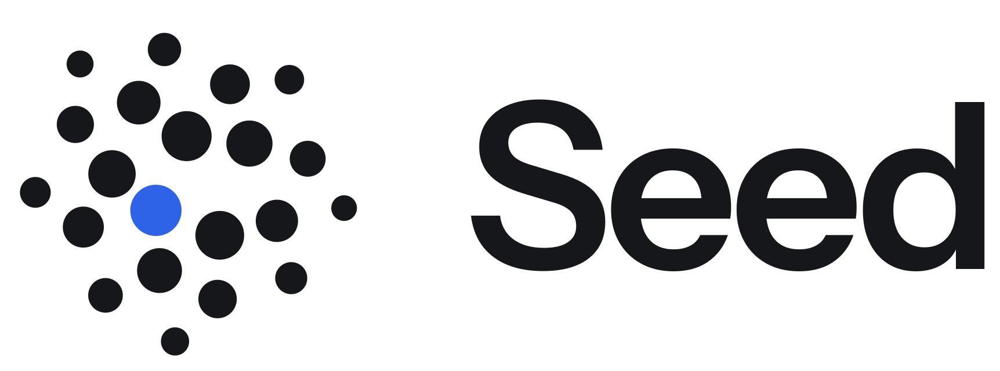
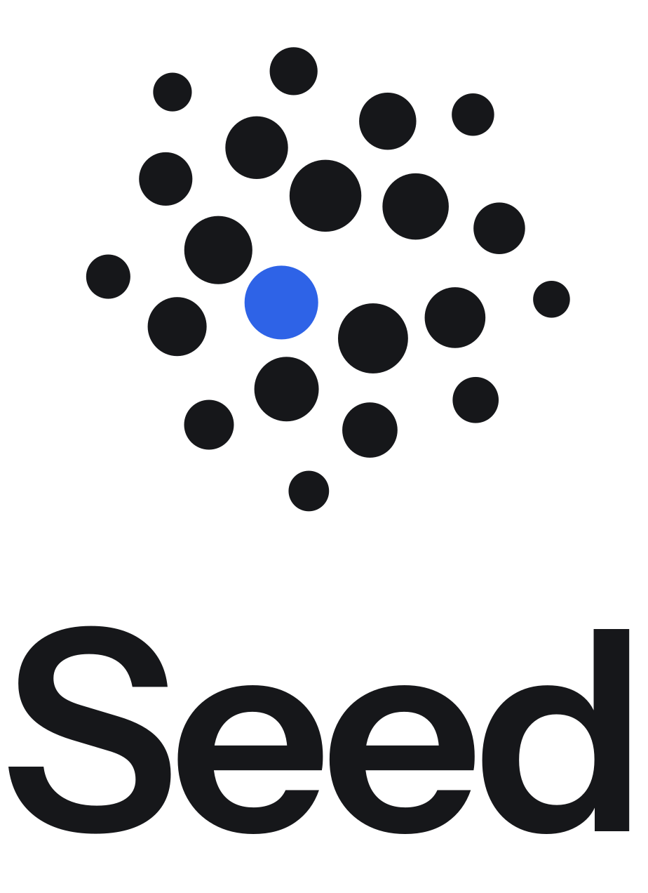
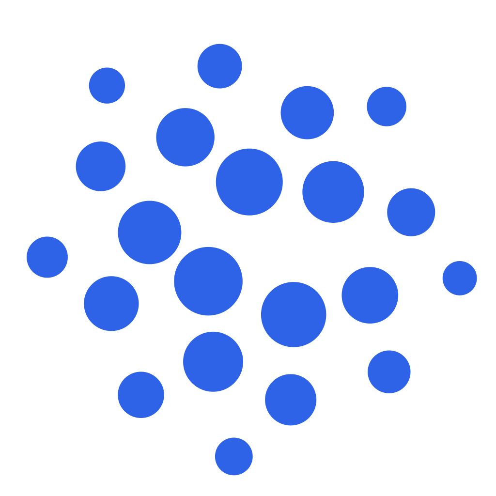
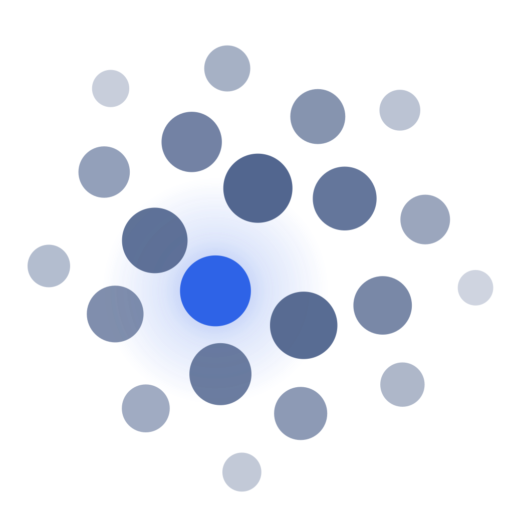
The wordmark is Instrument Sans at weight 600 with −3% tracking, set in the text colour. The mark's box is 1.6× the wordmark's em in the horizontal lockup and 1.9× in the stacked one.
| Mark box | 1.6 em of the wordmark |
|---|---|
| Gap | 0.4 em |
| Baseline | wordmark's cap height centred on the box |
| Where | The site's app bar below 1024px, the docs header, documents, partner strips |
| Mark box | 1.9 em, centred over the wordmark |
|---|---|
| Gap | 0.34 em |
| Where | Square and portrait placements, the end slide, stickers |
| Avoid | Headers and anything under 90px tall |
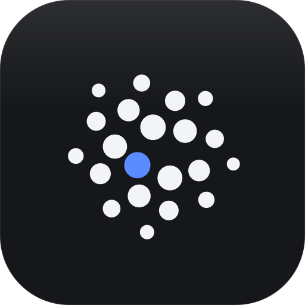
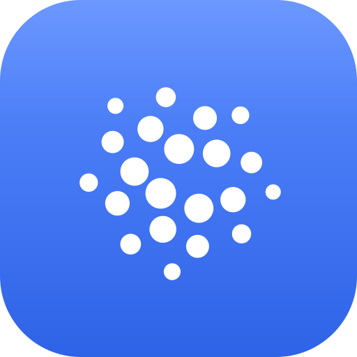
Charcoal is the one theme. The greys are neutral and step lighter as a surface comes forward; blue is the only colour that is not data. Greens, yellows and reds mean something and are never decoration.
#16171AEvery page. The flat charcoal under the dot field.#121316The well: fields, the search box, segment tracks (--well #111215 in delta.css).#1F2125Sticky bars, art frames, inputs. Frosted panels are rgba(31,33,37,.18) over the field.#25272CA surface inside a panel.#30333ATooltips and anything lifted above a card.rgba(255,255,255,.08)--hair .08 and --hair-2 .17: every border is white at low alpha, never a grey.#F3F4F6Text, the dots of the mark.#D3D6DCSecondary text, chip labels.#9DA2ACCaptions, column heads, unselected segments.#868B95Placeholders, the strip of a refunded raise.#2E63E7Fills: the foot of the button gradient, selection, the seed on light. Hover #4377F5.#5B8CFFLines, focus rings, the seed on dark, the head of the button gradient.The accent tints, and the colours that carry meaning. A green is always seeded, up or passed; a red is down, failed or sell. Neither is ever decoration.
#A4C0FFAccent text, rail labels, the fill strip, chip icons.#52668FThe muted mark, quiet outlines.rgba(46,99,231,.24)The tint under a chosen segment and the wallet button (Delta: --grad-seg).#45DB93Seeded, up, a passed check. Ink #7BE8B2, wash rgba(69,219,147,.14).#F3BC58A check to look at. Ink #F7D08A. (--warn #E8B45C is the amber of notices.)#FF7268Down, a failed check, sell. Ink #FF9B93. (--err #FF8B9C for form errors.)#5B8CFF → #2E63E7180°. Every primary call to action, lit along the top (inset 0 1px 0 rgba(255,255,255,.14)) with the glow 0 10px 28px -10px rgba(46,99,231,.8).rgba(91,140,255,.34) → rgba(46,99,231,.2)A chosen segment, a rank badge, the current rail item; bordered rgba(91,140,255,.42).#F2554C → #F6C445 → #34C17BHow far along a raise is: red, through yellow, to green at the target. Only under raised figures.Three families from Google Fonts, each with one job. Sans for everything, the serif in italic for the first phrase of a heading, mono for every figure.
A raise sells its token at a price set by its target. Fill it and the whole raise opens a pool.
The italic opens a heading and stops after two or three words. It never sets body text, buttons, labels or the wordmark. Roman serif is not used.
Hero h1 26–34px · Docs h1 34–54px · Page h1 42–88px (.l1) · h2 20–24px · Body 15.5 · Small 12.5–13.5 · Mono 11.5–13
Prices, market caps, counts, times, addresses, tickers and percentages are mono so columns line up and a tick does not reflow a row. Units sit in sans or muted mono after the number.
Rendered here with the site's own CSS. Buttons are pills, the chosen state is a lit, bordered block, every figure is mono, and surfaces are glass over the dot field.
Primary: --grad-btn, lit top edge, glow. Secondary: the chip tint with a hairline. Icon buttons are 36px squares, radius 10. Nothing is ever a bare blue rectangle.
A dark well with a hairline; the chosen segment is --grad-seg with the --seg-line border and a small glow. Buy and sell are the only segments that take green or red.
Stat chips carry one mono figure and a muted unit. Rank badges share the segment gradient. Check chips are the only place the semantic colours appear as fills.
The barcode strip (2px bars on a 5px pitch) is the fill in a table; blue-white while live, green once seeded, faint when refunded. The 3px progress bar under a raised figure runs red through yellow to green.
Bordered cells drawn with a 1px gap over the hairline colour, so every line is one hairline. Labels muted sans, values mono.
A dark well, radius 12, a hairline. Focus: the --seg-line border, a 4px ring of rgba(91,140,255,.3) and the small glow. Units sit in a lit suffix block.
The page is a dot field over charcoal. Panels are frosted glass; the content sits between two hatched gutters; a thin rail of icons runs down the left.
Outline icons on a 24-unit grid, 1.7px stroke, round caps and joins, no fills except the X and Discord marks. Muted at rest, ink on hover, white when current.
One curve, cubic-bezier(.22,1,.36,1), and two lengths: .18s for hovers and presses, .28s for slides and entrances. Entrances sharpen into place without fading from transparent, so the glass is there from the first frame. Strips and bars take .6s to grow. Nothing bounces, nothing loops except a busy spinner.
Seed talks the way a careful person explains money: plainly, in full sentences, with the number right there. It never sells.
| Say raise. | A raise, a backer, a founder, a target, a deadline, a pool. Never presale, launch, mint drop, IDO, degen, ape, moon. |
| Plain words, full sentences. | "Fill it and the whole raise opens a pool, locked for good." One idea per sentence; the verb is early; no semicolons in the interface. |
| The number is the point. | Give the figure, its unit and what it is relative to: "64.13 / 85.00 SOL", "1% on top", "a 1.25% pool fee". Round only where the site rounds. |
| Honest about state. | "Live on Solana devnet: real transactions, test SOL with no value." Demo is marked Demo. A missing reading is "—", never a guess. |
| Quiet case, no exclamation. | Sentence case everywhere, including buttons and column heads. No exclamation marks, no emoji, no all-caps except tickers. |
| Address the reader. | "Your positions", "what you paid". Seed is "Seed" or "the program", never "we". |
raise · backer · founder · target · deadline · fill, filled · seed, seeding, seeded · refund, refunded · pool · locked for good · the program · market cap · the fee (1% on top) · the pool fee · team unlocks · chain checks · Trending · the Terminal · Launch · Portfolio · Docs
Five headers at 1500 × 500 for X and similar. The dashed circle is where X lays the avatar (roughly the lower left 400 × 400 with its centre inside the banner), so nothing that matters sits there; the mark's own avatar goes in that slot.
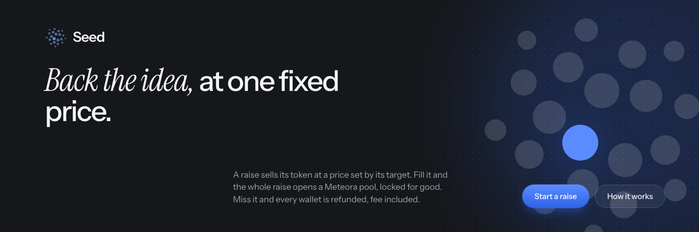
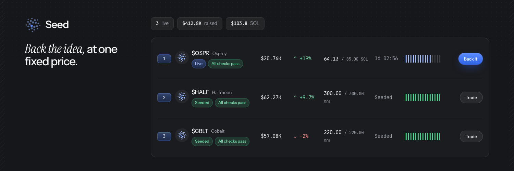
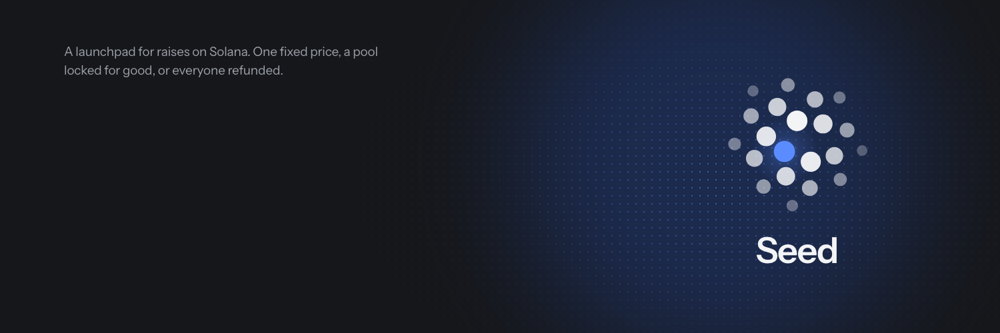
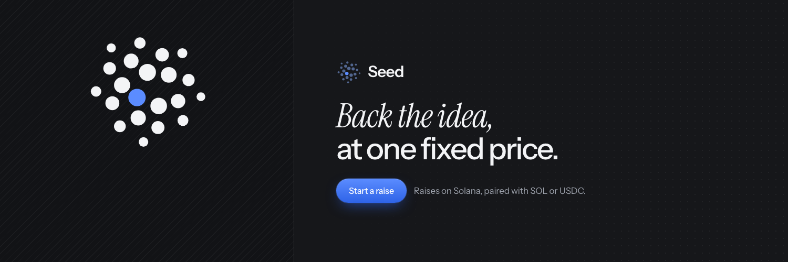
| Size | 1500 × 500 px, PNG. X shows about 1500 × 500 on desktop and crops the top and bottom ~60px on phones; nothing important sits within 60px of either edge. |
|---|---|
| Avatar | Use logo/seed-icon-charcoal.png (512) or the bare mark on charcoal, logo/seed-mark-dark.png. |
| Editing | Each banner is an HTML file in banner/ with the site's tokens inline; change the copy or figures there and re-render with _src/render.sh. |
| Other sizes | For 1200 × 630 (link previews) or 1080 × 1080 (posts), take banner 1 or 4 and re-centre the mark; keep the clear space rule. |
SVG is the source for every logo; the PNGs are 1024px renders (512 for the icons) on the background they are meant for. Fonts are in fonts/ for the HTML sources; the brandbook itself is brandbook/index.html and brandbook/Seed-brandbook.pdf.
| Logo source | Render | Size |
|---|---|---|
logo/seed-mark-dark.svg | logo/seed-mark-dark.png | 1024 px |
logo/seed-mark-light.svg | logo/seed-mark-light.png | 1024 px |
logo/seed-mark-muted.svg | logo/seed-mark-muted.png | 1024 px |
logo/seed-lockup-dark.svg | logo/seed-lockup-dark.png | 1024 px |
logo/seed-lockup-light.svg | logo/seed-lockup-light.png | 1024 px |
logo/seed-stacked-dark.svg | logo/seed-stacked-dark.png | 1024 px |
logo/seed-stacked-light.svg | logo/seed-stacked-light.png | 1024 px |
logo/seed-mono-white.svg | logo/seed-mono-white.png | 1024 px |
logo/seed-mono-lockup-white.svg | logo/seed-mono-lockup-white.png | 1024 px |
logo/seed-mono-black.svg | logo/seed-mono-black.png | 1024 px |
logo/seed-mono-lockup-black.svg | logo/seed-mono-lockup-black.png | 1024 px |
logo/seed-mono-blue.svg | logo/seed-mono-blue.png | 1024 px |
logo/seed-mono-lockup-blue.svg | logo/seed-mono-lockup-blue.png | 1024 px |
logo/seed-bloom-dark.svg | logo/seed-bloom-dark.png | 1024 px |
logo/seed-bloom-light.svg | logo/seed-bloom-light.png | 1024 px |
logo/seed-icon-charcoal.svg | logo/seed-icon-charcoal.png | 512 px |
logo/seed-icon-blue.svg | logo/seed-icon-blue.png | 512 px |
logo/seed-icon-light.svg | logo/seed-icon-light.png | 512 px |
| Banner source | Render | Size |
|---|---|---|
banner/banner-01-minimal.html | banner/banner-01-minimal.png | 1500 × 500 |
banner/banner-02-tagline.html | banner/banner-02-tagline.png | 1500 × 500 |
banner/banner-03-terminal.html | banner/banner-03-terminal.png | 1500 × 500 |
banner/banner-04-dotfield.html | banner/banner-04-dotfield.png | 1500 × 500 |
banner/banner-05-split.html | banner/banner-05-split.png | 1500 × 500 |
| Also | ||
|---|---|---|
fonts/fonts.css + 12 woff2 | Instrument Sans (variable), Instrument Serif, JetBrains Mono (variable), from Google Fonts | |
_src/build.py | Regenerates every SVG, banner and this page from the site's tokens | |
_src/render.sh | Renders the PNGs and the PDF with headless Chrome | |